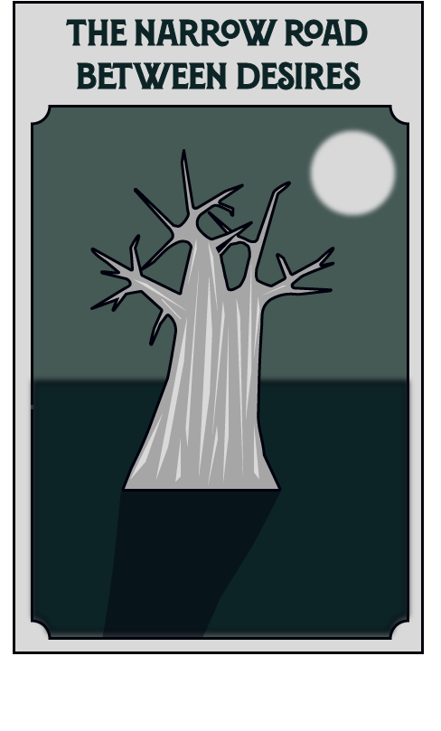

"I have stolen princesses back from sleeping barrow kings. I burned down the town of Trebon. I have spent the night with Felurian and left with both my sanity and my life. I was expelled from the University at a younger age than most people are allowed in. I tread paths by moonlight that others fear to speak of during day. I have talked to gods, loved women, and written songs that make the minstrels weep. You may have heard of me..."
News
Check out the latest release!
Bast knows how to bargain. The give-and-take of a negotiation is as familiar to him as the in-and-out of breathing; to watch him trade is to watch an artist at work. But even a master's brush can slip. When he accepts a gift, taking something for nothing, Bast's whole world is knocked askew, for he knows how to bargain—but not how to owe.
From dawn to midnight over the course of a single day, follow the Kingkiller Chronicle's most charming fae as he schemes and sneaks, dancing into trouble and back out again with uncanny grace.
The Narrow Road Between Desires is Bast's story. In it he traces the old ways of making and breaking, following his heart even when doing so goes against his better judgement.
After all, what good is caution if it keeps him from danger and delight?
Buy Now